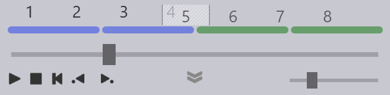
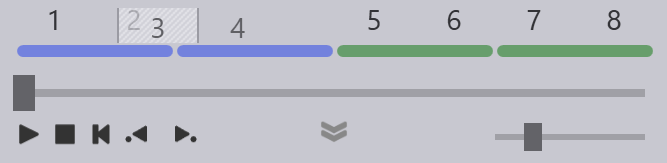
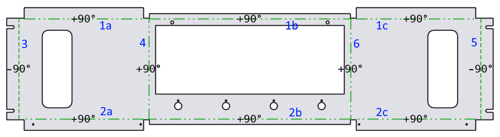

Järjestyksen muuttaminen
Sivujen käsittelyjärjestystä voi muuttaa kahdella eri tavalla. Toinen tapa on käyttää sivujen paneelin painiketta Edit Sequence (muokkaa järjestystä) edellisen kuvauksen mukaisesti. Toinen, tätä yksinkertaisempi tapa on vetää osio uuteen paikkaan taivutusnavigaattorissa.
-
Napsauta taivutuksen numeroa taivutusnavigaattorissa ja muuta järjestystä vetämällä taivutus toiseen paikkaan. Napsauttamasi sivu määrittelee tarkasti vetämisen kohteena olevat taivutukset. Tarkastelkaamme seuraavassa esitettyä osaa, jossa on kaksi lyhyttä sivua ja kaksi pitkää sivua. Järjestys on tässä tapauksessa L1 L2 C1 C2:

-
Jos napsautat jotakin sivulla C1 tai sivulla L1 olevista taivutuksista, vetämisen kohteena on koko lyhyt sivu tai koko pitkien sivujen joukko. Jos silloin napsautat taivutuksia 1 tai 2 (sivun L1 osa) tai taivutuksia 5 tai 6 (sivun C1 osa), vetämisen kohteena on tällöin 4 taivutusta. Alla oleva kuva esittää tilannetta, jossa vetäminen on aloitettu taivutuksesta 5. Vedämme nyt sivuja C1 ja C2 (huomaa, että taivutukset 5, 6, 7 ja 8 ovat saaneet harmahtavan sävyn ja liikkuvat hiiren mukana). Voimme nyt pudottaa vetämämme sivut ennen sivuja L1 ja L2, jolloin järjestykseksi vaihtuu C1, C2, L1, L2.
 -
Jos aloitamme vetämään sivuja L2 tai C2, vetämisen kohteena on tällöin vain kyseinen sivu. Näitä sivuja vetämällä meidän olisi mahdollista vaihtaa sivujen C1 ja C2 tai sivujen L2 ja L2 keskinäistä järjestystä. Voisimme käyttää tätä toimintoa jopa muuttaaksemme järjestyksen esimerkiksi muotoon L1, C1, C2, L2. (Tämä järjestys ei yleensä ole käyttökelpoinen, mutta se saattaa silti silti soveltua hyvin joihinkin erityistilanteisiin). Seuraavassa esimerkissä vetämisen kohteena on sivu L2 (huomaa, että taivutukset 3 ja 4 ovat saaneet harmahtavan sävyn ja liikkuvat hiiren mukana).
 -
Järjestyksen vaihtaminen sivuja vetämällä on tarkoitettu usein esiintyviin tilanteisiin, joissa pitkien ja lyhyiden sivujen paikkaa on tarpeen vaihtaa helposti (CCLL <→ LLCC) mahdollistaen toisaalta myös yksittäisten sivujen, kuten sivujen C1 ja C2, keskinäisen järjestyksen muuttamisen. Järjestyksen muuttamisen jälkeen TecZone Fold laskee työstötoimintojen, terien, vasteiden jne. tiedot uudelleen. On todennäköistä, että järjestyksen muuttaminen saattaa vaatia tässä tilanteessa ZBW-terien ja ENW-työkalujen käyttöä (tai johtaa siihen, että kyseisiä työkaluja ei enää tarvita). Kaikkien näiden muutosten laskenta tapahtuu automaattisesti.
-
Joskus näin valitsemaasi järjestystä ei voi toteuttaa. Tarkastelkaamme esimerkiksi alla olevaa osaa, jossa on 6 taivutusta. Taivutukset 1 ja 2 ovat yhdistelmätaivutuksia, jotka koostuvat useista samalla suoralla olevista segmenteistä. Jos käsittelemme taivutukset 4 tai 6 ensin, emme voi enää käsitellä taivutuksia 1 tai 2, koska yksittäiset segmentit eivät ole tällöin enää samalla suoralla.

Jos yrität muuttaa järjestystä siten, että tuloksena on edellä kuvatun kaltainen mahdoton järjestys, TecZone Fold ei muuta järjestystä, vaan näyttää sen sijaan virheilmoituksen: